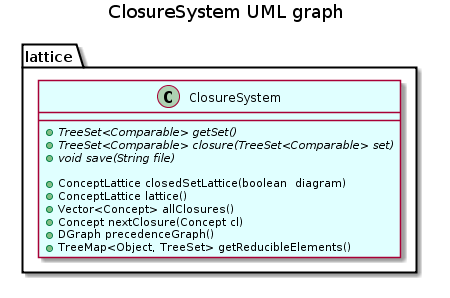

public abstract class ClosureSystem
extends java.lang.Object
This class is an abstract class defining the common behavior of closure systems, and specialy its closed set lattice generation.
Both a context and an implicational system have properties of a closure system, and therefore extend this class.
A closure system is formaly defined by a set of indexed elements and a closure operator (abstract methods getSet() and closure(java.util.TreeSet<java.lang.Comparable>)).
Abstract method save(java.lang.String) also describe the common behavior of a closure system.
However, this abstract class provides both abstract and non abstract methods.
Although abstract methods depends on data, and so have to be implemented by each extended class, non abstract methods only used property of a closure system. It is the case for methods nextClosure(lattice.Concept) (that computes the next closure of the specified one according to the lectic order implemented the well-known Wille algorithm) invoked by method allClosures() and the main method closedSetLattice(boolean) (where lattice can be transitively closed or reduced).

| Constructor and Description |
|---|
ClosureSystem() |
| Modifier and Type | Method and Description |
|---|---|
java.util.Vector<Concept> |
allClosures()
Returns all the closed sets of the specified closure system (that can be an IS or a context).
|
ConceptLattice |
closedSetLattice(boolean diagram)
Returns the closed set lattice of this component.
|
abstract java.util.TreeSet<java.lang.Comparable> |
closure(java.util.TreeSet<java.lang.Comparable> set)
Returns the closure of the specified set.
|
java.util.TreeMap<java.lang.Object,java.util.TreeSet> |
getReducibleElements()
This function returns all reducible elements.
|
abstract java.util.TreeSet<java.lang.Comparable> |
getSet()
Returns the set of elements of the closure system.
|
ConceptLattice |
lattice()
Returns the lattice of this component.
|
Concept |
nextClosure(Concept cl)
Returns the lecticaly next closed set of the specified one.
|
DGraph |
precedenceGraph()
Returns the precedence graph of this component.
|
abstract void |
save(java.lang.String file)
Saves this component in a file which name is specified.
|
public abstract java.util.TreeSet<java.lang.Comparable> getSet()
Returns the set of elements of the closure system.
public abstract java.util.TreeSet<java.lang.Comparable> closure(java.util.TreeSet<java.lang.Comparable> set)
Returns the closure of the specified set.
set - The specified setpublic abstract void save(java.lang.String file)
throws java.io.IOException
Saves this component in a file which name is specified.
file - name of filejava.io.IOException - When an IOException occurspublic ConceptLattice closedSetLattice(boolean diagram)
Returns the closed set lattice of this component.
A true value of the boolean diagram indicates that the Hasse diagramm of the lattice is computed (i.e. it is transitively reduced), whereas a false value indicates that the lattice is transitively closed
A transitively reduced lattice is generated by the static method ConceptLattice diagramLattice (ClosureSystem init) that implements an adaptation of Bordat’s algorithm. This adaptation computes the dependance graph while the lattice is generated, with the same complexity.
A transitively closed lattice is generated bye well-known Next Closure algorithm. In this case, the dependance graph of the lattice isn’t computed.
diagram - a boolean indicating if the Hasse diagramm of the lattice is computed or not.public ConceptLattice lattice()
Returns the lattice of this component.
public java.util.Vector<Concept> allClosures()
Returns all the closed sets of the specified closure system (that can be an IS or a context).
Closed sets are generated in lecticaly order, with the emptyset’s closure as first closed set, using the Ganter’s Next Closure algorithm.
Therefore, closed sets have to be comparable using ComparableSet class. This treatment is performed in O(cCl|S|^3) where S is the initial set of elements, c is the number of closed sets that could be exponential in the worst case, and Cl is the closure computation complexity.
public Concept nextClosure(Concept cl)
Returns the lecticaly next closed set of the specified one.
This treatment is an implementation of the best knowm algorithm of Wille whose complexity is in O(Cl|S|^2), where S is the initial set of elements, and Cl is the closure computation complexity.
cl - a conceptpublic DGraph precedenceGraph()
Returns the precedence graph of this component.
Nodes of the graph are elements of this component. There is an edge from element a to element b when a belongs to the closure of b.
The rule a -> a isn’t added to the precedence graph
When precedence graph is acyclic, then this component is a reduced one.
public java.util.TreeMap<java.lang.Object,java.util.TreeSet> getReducibleElements()
This function returns all reducible elements.
A reducible elements is equivalent by closure to one or more other attributes. Reducible elements are computed using the precedence graph of the closure system. Complexity is in O()